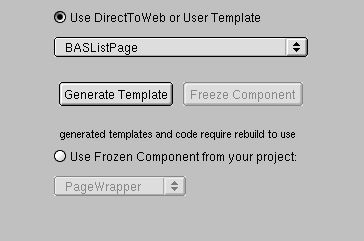
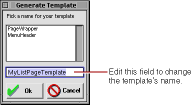

PATH
Documentation > WebObjects 4.5 >
Tools and Techniques
Generating Templates
To generate a template:
-
Click the Expert Mode button at the bottom of the Web Assistant to enter Expert mode.
-
Click the Generate tab at the top of the Web Assistant.

-
Select the task corresponding to the page you want to generate. In the Select "*all*" in the Entities pop-up list.
You must select "*all*" for the entities because the template is independent of the entity. You cannot select "*all*" for the task to generate multiple templates. You must generate the templates one at a time.
-
Make sure the "Use DirectToWeb or User Template" radio button is selected.
-
Click Generate Template.
The Generate Template window appears. It contains a text field with a default name for your template. You can edit the name if you choose.

-
Click the Ok button.
Direct to Web copies a component (with extension .wo
) and a corresponding .java
file from a predefined template and adds them to your project. You may have to wait a few moments for this process to complete. Your settings are automatically saved.
-
Rebuild your project.
After you generate the template and rebuild your project, you can use the Web Assistant to apply the template to a Direct to Web page. See
Customizing Pages
.
© 1999 Apple Computer, Inc. – (Last Updated July 27 99)